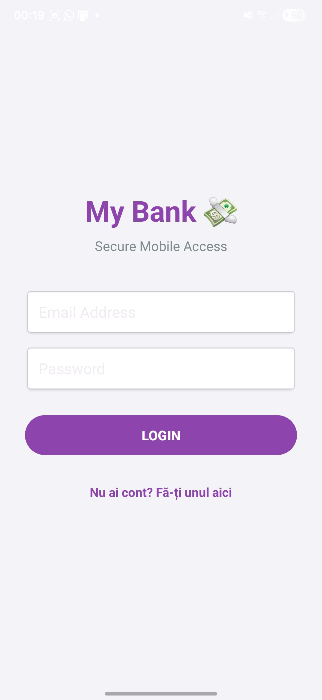
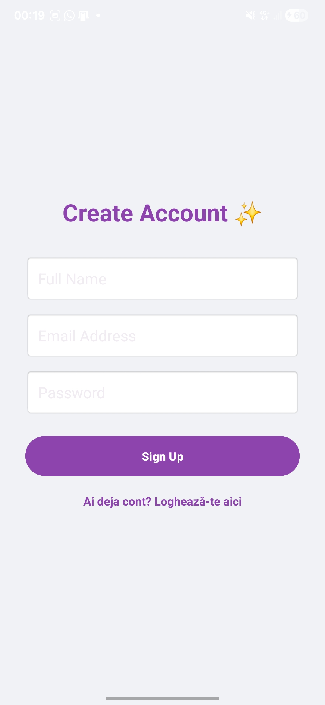
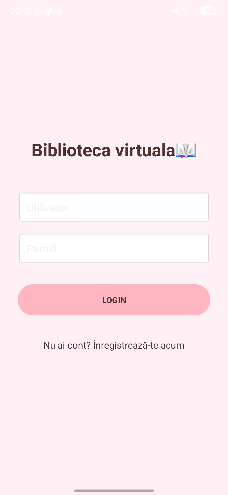
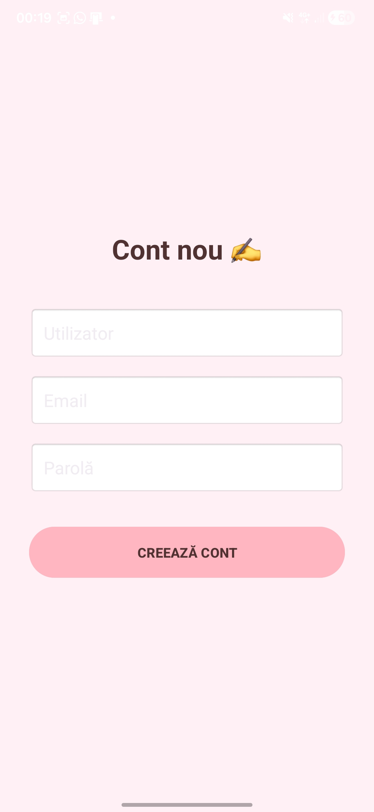
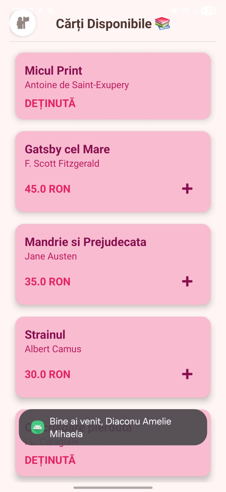
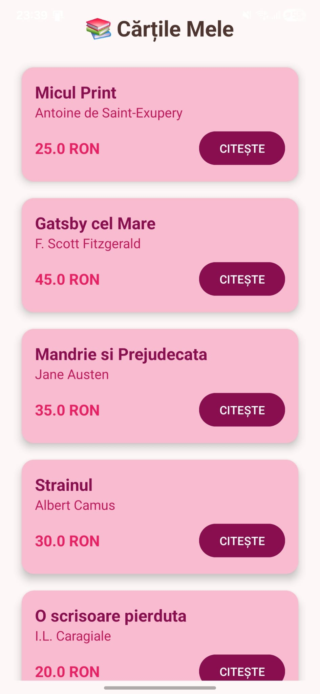
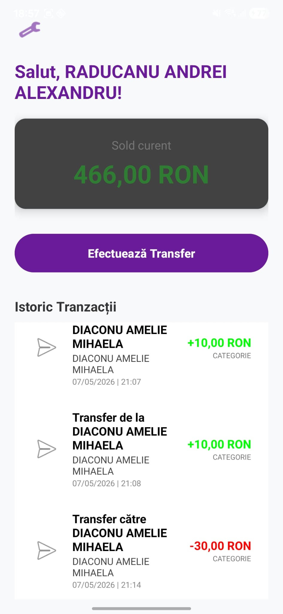
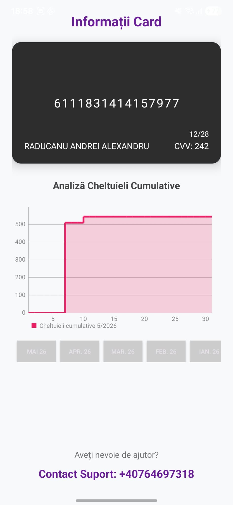
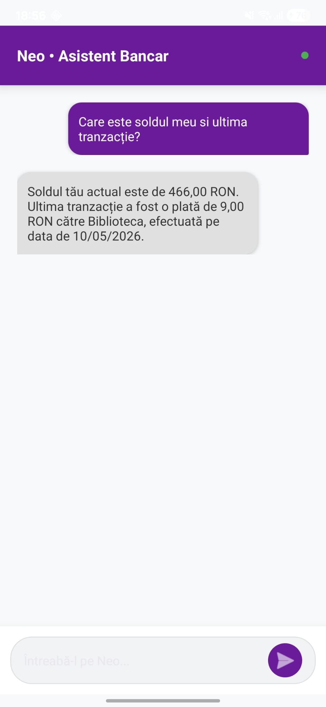

Securitatea ecosistemului începe cu modulele de autentificare. Pagina de Log in asigură accesul utilizatorilor existenți prin validarea credențialelor direct cu serverul central, în timp ce procesul de Sign up permite înrolarea de noi utilizatori, creând automat profilele necesare atât în baza de date a băncii, cât și în cea a librăriei.




Librăria este compusă din două module principale: Pagina inițială, un magazin digital de unde utilizatorul poate explora și cumpăra cărți noi, și Pagina secundară (eReader), un spațiu dedicat lecturii unde sunt disponibile toate cărțile achiziționate, oferind o experiență fluidă și intuitivă.


Modulul bancar oferă transparență totală asupra resurselor financiare. Pagina inițială prezintă soldul curent și un istoric detaliat al transferurilor efectuate. Pagina secundară se concentrează pe managementul cardului, afișând datele acestuia și un grafic interactiv al cheltuielilor lunare pentru o monitorizare eficientă a bugetului.


Inovația proiectului constă în asistenții AI dedicați pentru fiecare program. Aceștia nu sunt simpli chatbot-uri; ei au acces direct la bazele de date. Aceștia identifică utilizatorul în mod automat și pot interoga istoricul tranzacțiilor băncii sau colecția de cărți a librăriei, oferind informații extrem de precise și personalizate în funcție de nevoile posesorului.
